さよと氏（実行委員長）11月6日 8:54・SNS（Threads）
全国どこでもいいので、食フェス用のテント余ってるところありませんか？
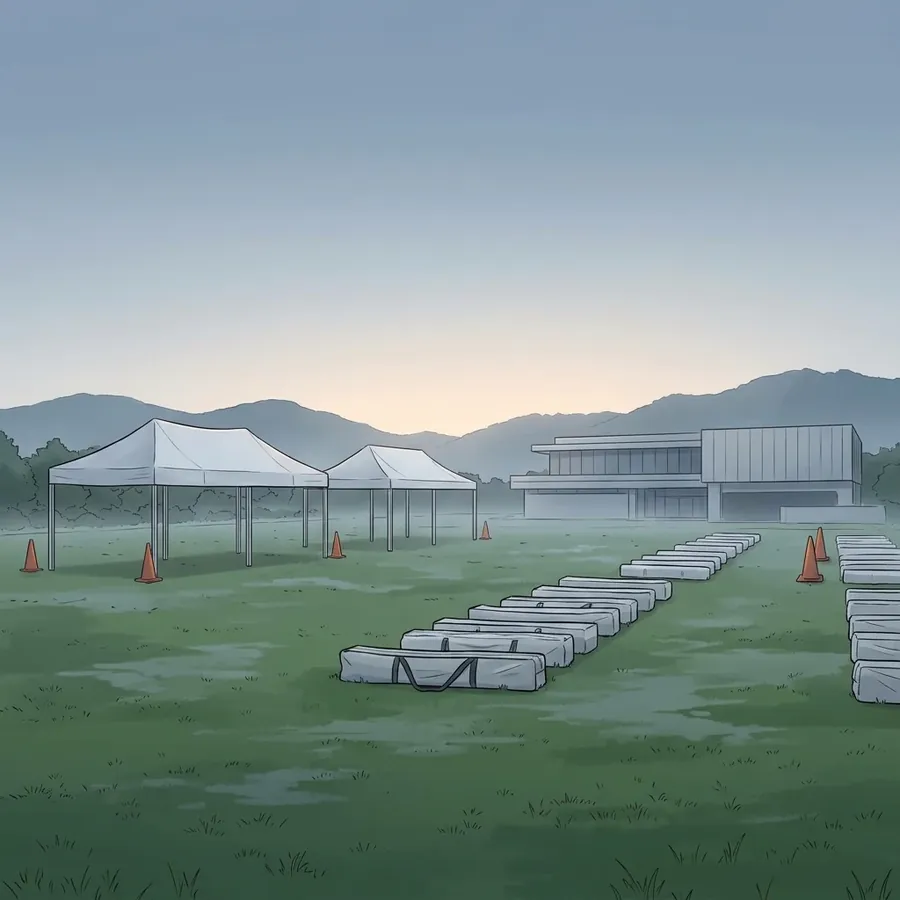
2026年11月7日・8日、鳥取県倉吉市。
テントは、前の晩になっても届かなかった。
※ 絵はすべて生成AIで作ったイメージです。実際の会場写真ではありません。実際の写真や資料は検証ノートに載せています。
こんにちは。記録係のきつねです。この漫画は、出店者用のチャット、当事者のSNS投稿、報道の記録をもとにしています。
実在の人のセリフは、ぜんぶ実際の書き込みをそのまま引用しています。セリフの下の番号が出典です。
絵に出てくる店主は、何人もの出店者の書き込みをもとにした架空の人物です。
確定 本人が認めている／双方の説明が一致
有力 一方の説明で、ほかの記録と矛盾しない
争点 説明が食い違っている
未確認 根拠が示されていない
普通の色のコマ＝出店者が見ていたこと 青いコマ＝その裏で起きていたこと（舞台裏）
出典の番号：L＝出店者用チャットの行番号、LI＝チャットに投稿された画像、X-M＝松林安美氏のX、T-A＝AXIS代表のThreads、N＝報道。A1〜K13 は検証ノートの台帳の項目。
登場する立場 お金と仕事は、こう流れていました。
出店者がお金を払った相手は主催。設営を頼んだのも主催。だから、出店者からはその先が見えませんでした。
夏〜10月
出店者募集のチラシに書かれていたこと
出店料は通常枠5万円、VIP枠10万円（早割あり）。
公式サイトの「よくある質問」には、こう書かれていた。
テント・机・椅子・電気などの備品や、冷蔵・冷凍庫、搬入用車両の手配など、出店に必要なサポートをご用意しています。Wayback Machine 10月8日版（I1）確定
9月6日
主催は、設営をAXISに頼んだ。AXISの説明（A10）有力
主催の説明では、地元の業者は「1,000万円超を前金・即金で」と言った。AXISなら前金と後払いで受けてくれる、という提案で決まった。松林安美氏の説明（A8・A9）有力
前金55万円、残りは後払い。ここまでは双方の説明が一致している。B1確定
打ち合わせはオンライン。あとで「内容が残っていない」ことが問題になります。
冷蔵冷凍車は、AXISが運んでくる段取りでした。覚えておいてください。C1・C2確定
11月2日〜5日
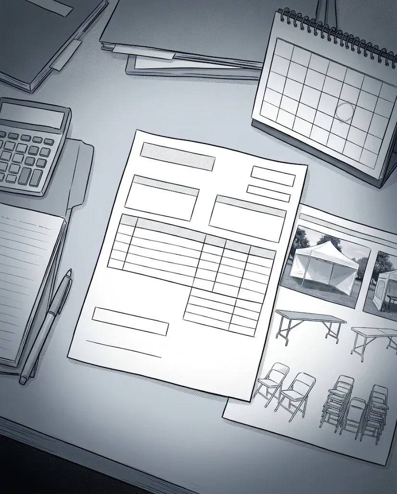
期限までに払われなければ、予約は取り消される。
AXISは「10月31日ごろ、この請求書を主催に送った」と言う。主催側は「発注が確認できる書類はなかった」と言う。J3・B6争点
最初の前金は55万円。でも直前になって、前金は大きく上がりました。ここまでは双方とも認めています。B4確定
では、なぜ上がったのか。
当初前金を55万で承諾していた時点から大幅に備品数が上がった為それに比例して値段もあがると言うことになります。L1680
発注書など証憑がないと怖くて支払えないと言いましたが出てきませんでした。
ですが直前に数百万円単位で前入金が跳ね上がりました。松林安美氏 X（X-M）
争点 発注は本当に増えたのか（B5）
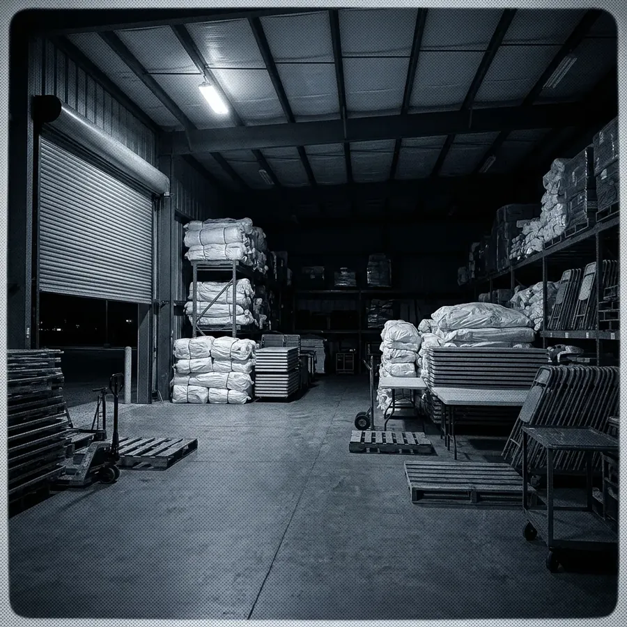
11月2日
レンタル業者からAXISへ、メールが届いた。
本日付けでのご入金のお約束でお待ちしておりましたが主催者様よりご入金の確認が取れませんでしたので今回はご準備する事が出来ませんLI04確定
開催の5日前。押さえていたテントや机は、すべて白紙になった。B7有力
出典：LI02（AXISが11月11日にチャットへ投稿したスクリーンショット）確定
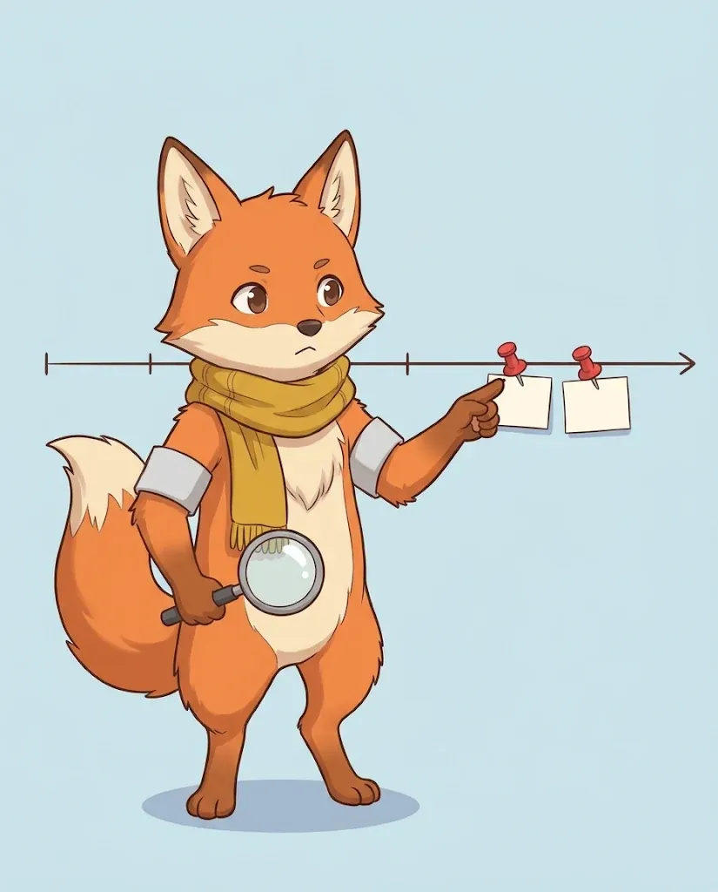
AXISは、55万円のまま振込先を伝えると、その金額で引き受けたことになってしまうので、振込先を教えずに交渉を続けたと書いています。主催の「振込先もわからなかった」という説明と一致します。H2確定
ただ、10月4日の時点でAXISは、55万円の振込先を聞かれて「AXIS口座開設手続き途中なので少しお待ちください！」と答えていました。LI20・L11確定
ただし、順番に注意。業者が予約を取り消したのは11月2日。「55万円で」と送ったのは11月3日。取り消しは、この行き違いより前に起きていました。J2確定
11月3日ごろには「125万円と25万円、合わせて150万円なら払える」という連絡もあった、とAXISは言います。L1676（B8）有力
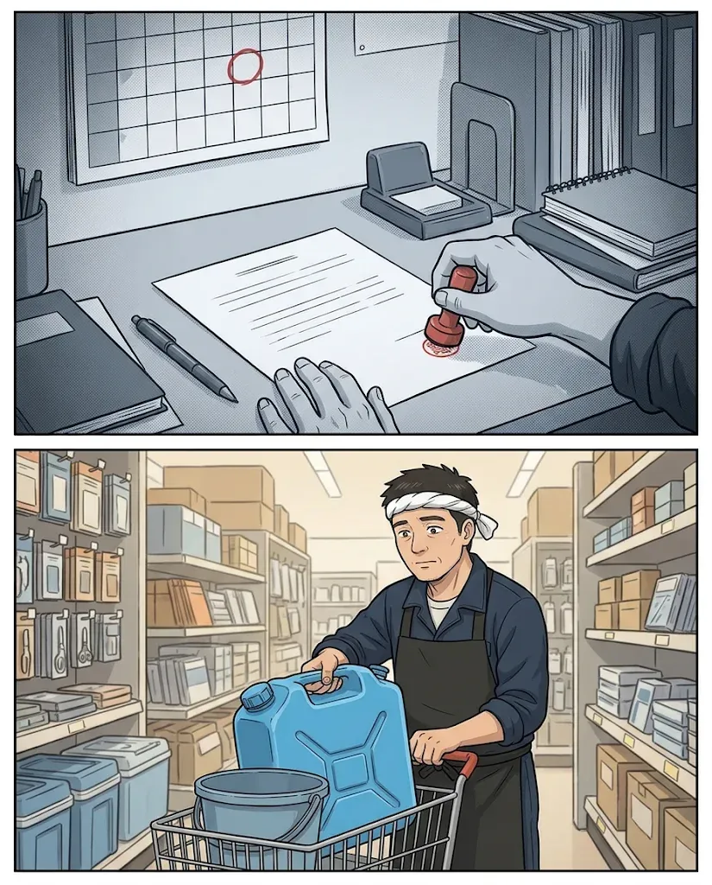
11月4日（上のコマ・舞台裏）
設営の契約書が結ばれる。開催の3日前。AXISの説明。反論はない（A4）有力
同じ日、市が公園の使用を許可した。I13確定
同じ日の14時、AXISは松林氏・小澤氏・さよと氏を「発注確認」グループに入れ、「テント64張 残46張」「冷蔵車・冷凍車 手配済」と報告した。主催側はこの日から、業者に直接お金を振り込み始める（11月6日までに少なくとも130万6,100円）。L1・L5確定
（下のコマ）同じ日、出店者のチャットには――
シンクは、お手洗い付近に共用の流し台を一つ設置します。テント内には水道は引きませんので、水道水を入れられるタンクと、排水を入れておくバケツ等をご用意ください。L694–695
テント内に引くという形でお話聞いていたのですがL697
予約が白紙になったこと、契約書がまだなかったこと。チャットには、出店者へのお知らせはありませんでした。
11月6日
全国どこでもいいので、食フェス用のテント余ってるところありませんか？
冷蔵車、冷凍車2トンの持ってる人いませんか？👀
前日の朝、実行委員長はSNSでテントを探していました。出店者のチャットでは、このことは知らされていません。
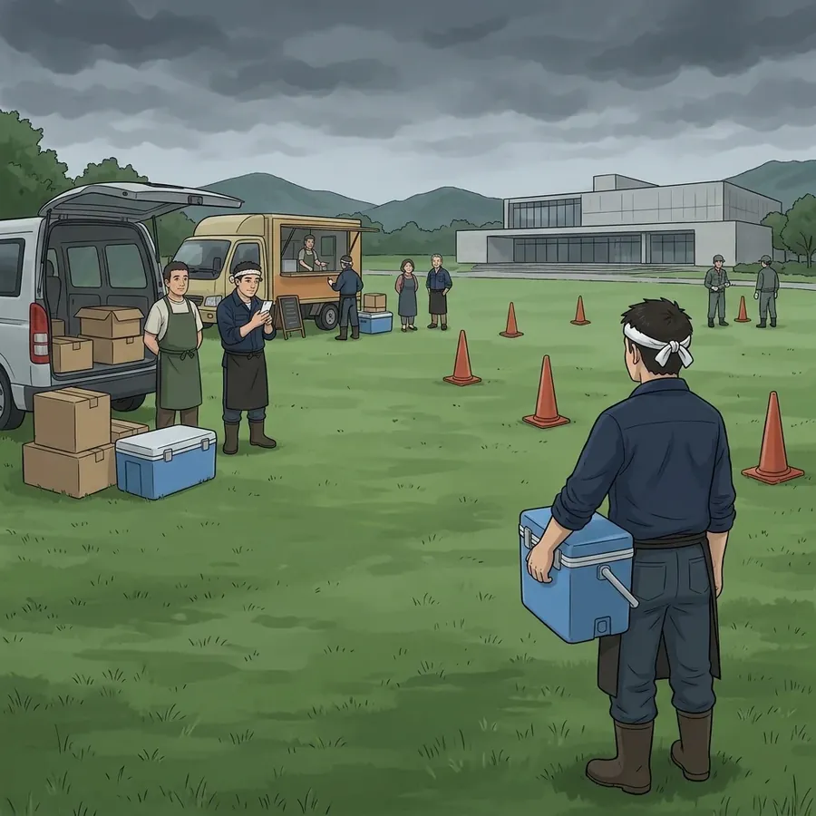
設営スタッフは20〜25人の予定だった。来たのは数人（チャットの記録では4人）。E8・J9確定
AXISは、入金がないことを理由に、自社の判断で人数を減らしたと書いている。L1471（E7）確定
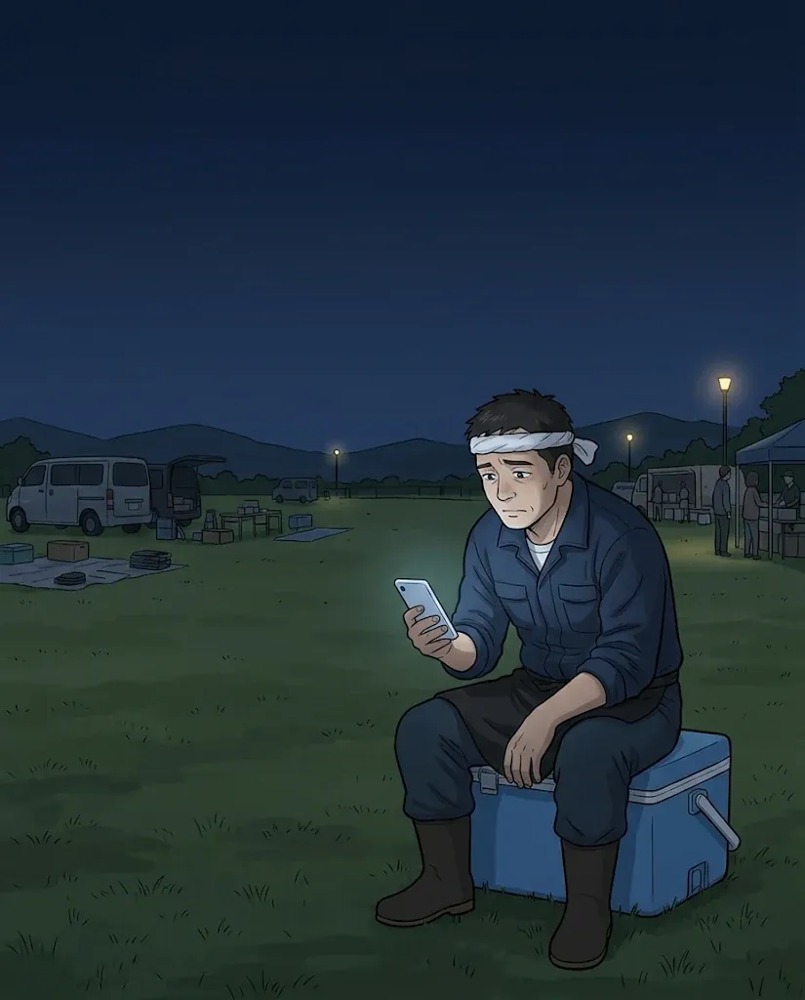
テント準備も含め輸送中に車両トラブルになってしまい、大幅な遅延になっております。L802–803
弊社は現場に14時に到着して19時迄現場に待っていました。L821
車両トラブルは実際にありました（関西からのトラックのエンジントラブル）。E10有力
でもこのとき、入金の問題には触れていません。AXISは後に、こう認めています。
背景には入金関連で様々なトラブルがあったという事実はありますが、事前共有もする事なくL1424（E2・E11）確定
「すべて確保できました」。でも予約していたのは64張。AXISの説明では、集められたのは25張が限界でした。K5確定
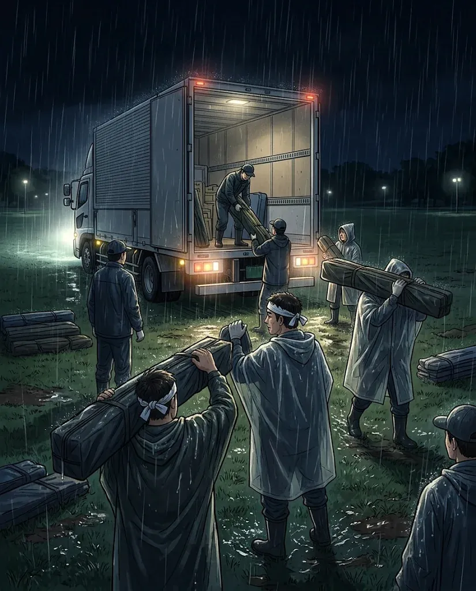
大変お待たせいたしました。テント、10トン冷凍冷蔵車到着いたしました。L869–870（E4）確定
開場まで、あと9時間。
11月7日・8日
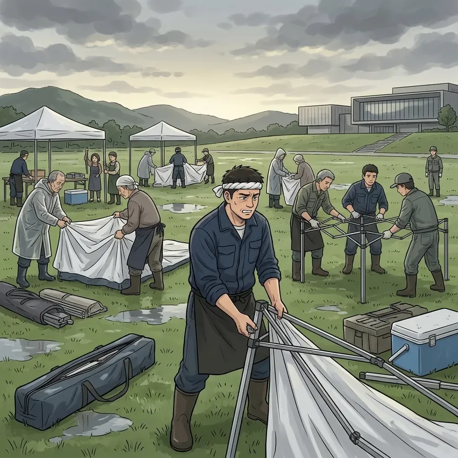
現状6時搬入可能の目処が立っておりません。
設営及び安全確認完了時刻 午前7:30を予定しております。L875–879
出店者の皆さんがそれぞれのテントをご自身も手伝って建てないと間に合わないかもしれません。L889
出店者は、テントの設営を手伝った。実行委員長も、翌日のお礼のあいさつでこのことに触れている。L1155（E6）確定
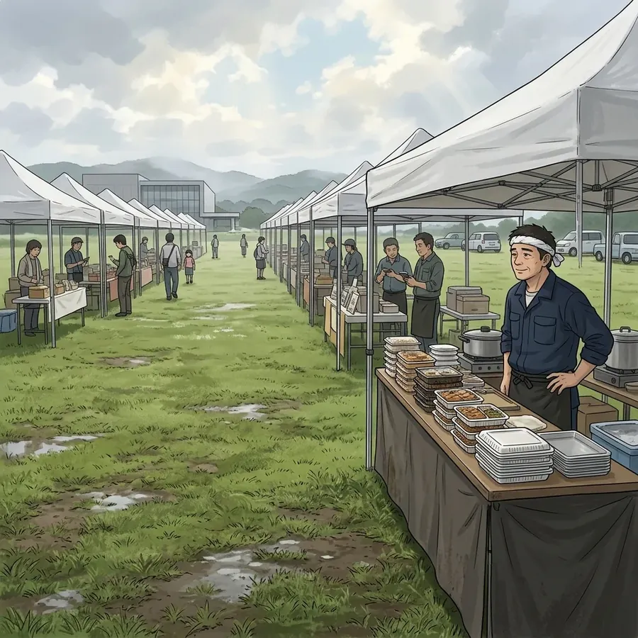
チラシには「来場想定5万人」。
来場者数の公式な発表はない。報道は「500人ほど」「1000人ほど」「2000人に届かず」。I10確定
ある出店者は、1日の売り上げを80万円ほど見込んでいた。結果は1万円だった。日本海テレビの報道（N04）
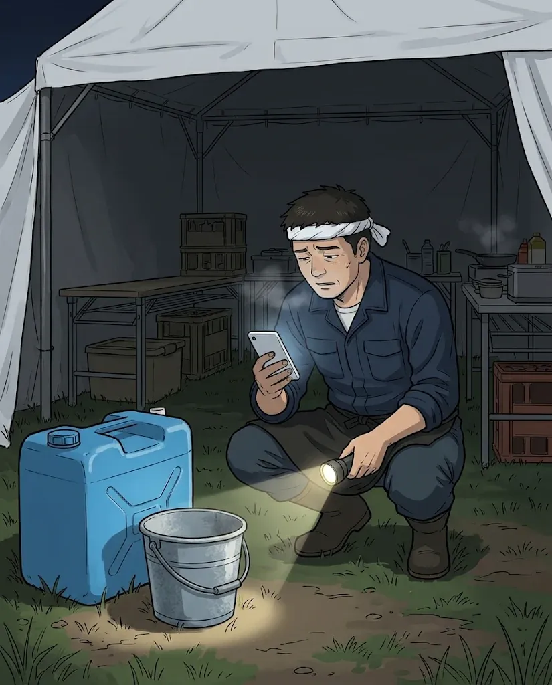
イベントのあと、保健所が翌日に設備を確認することになった。チャットでは、こう求められた。
不足している設備は各自でご用意・ご持参をお願いいたします。L1022（D7）確定
各店のタンクとバケツは、11月4日に案内されていました。露店の営業許可ではふつう必要なものです。ただ、それを伝えたのは開催の3日前でした。D2・D4
AXIS自身の発言を、日付順に並べてみます。
全力で走って21時に到着できるようにしますがL508
冷蔵、冷凍車の件につきましては、予定時刻に手配出来ておらず申し訳ございません。運転手配置不備により、遅延が生じております。L826–827
当日冷蔵車を乗ってきて、一度電車で戻りもう一台を早朝までに持ってくるというお話でしたが、乗って来られる予定の方が体調不良の為運搬出来ず急遽現場調達致しました。L1547–1548
最初に冷蔵冷凍車を運ぶ担当は、AXISでした。J4確定
「一切行っておりません」は、実際に使われた代わりの車のことだけを言っているなら、言葉の上では成り立ちます。でも、ほかの3つの発言とは食い違っています。C6確定
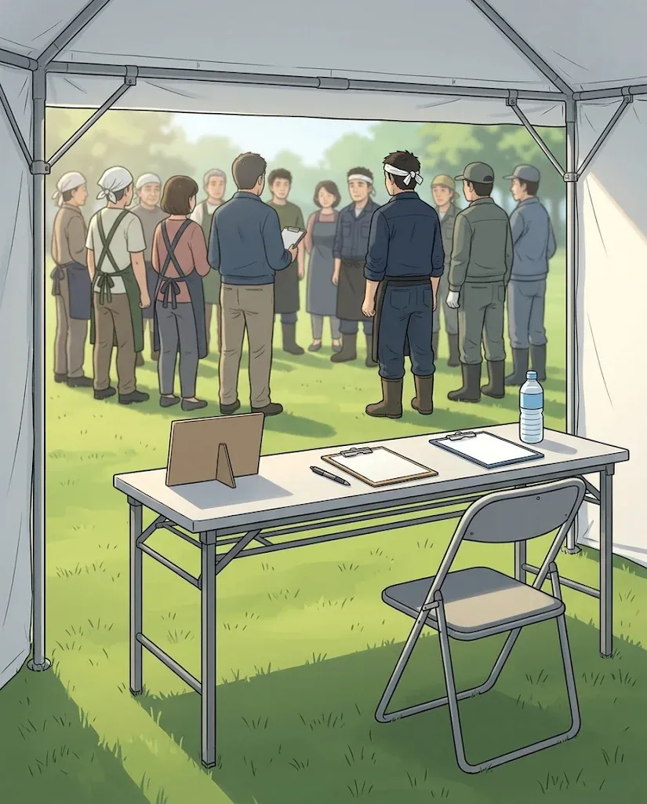
本日直接謝罪させていただいた店舗も含め明日各店舗謝罪に伺います。L1113
松林です。逃げるつもりはありません。本当に申し訳ございません。L1221
出店者とAXISの説明では、松林氏はこの日、会場に来なかった。G1・H9有力
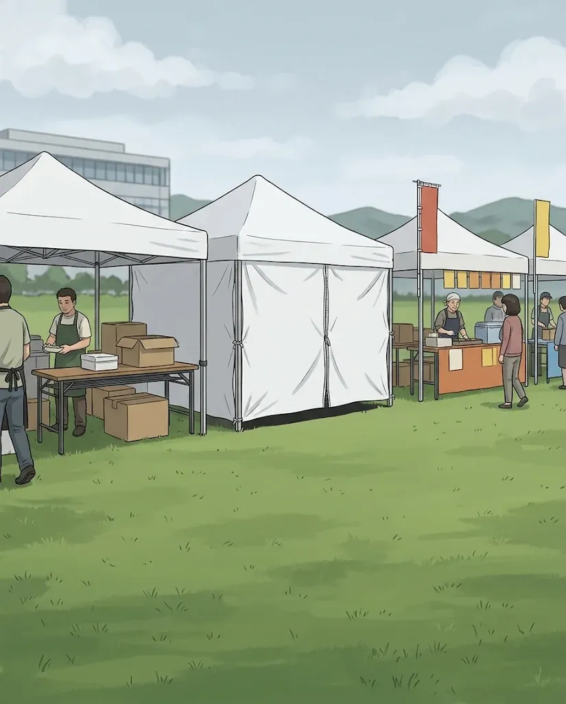
水道どこですか？L1216
2日目の出店を取りやめた店もあった。G9確定
11月9日〜11日
11月9日
実行委員の小澤瞬大氏とAXISが、チャットに謝罪文を出した。さよと氏はXで謝罪した（説明は後日）。G8確定
11月10日
倉吉市長が、主催に説明責任を求めた。読売新聞（N03）
11月11日
松林氏がXで経緯を説明し、AXISがThreadsで反論した。チャットでも、金額と入金をめぐる言い合いになった。
松林が対応するなと実行委員会に怒られてしまいました。L1415（G3）確定
シンクは「なくした」（AXIS）のか、「持ってきたのに設置しなかった」（松林氏）のか。説明が食い違っています。J6争点
出典：L1725–1748
どちらの言い分も、打ち合わせの記録が残っていないので確かめられません。B5争点
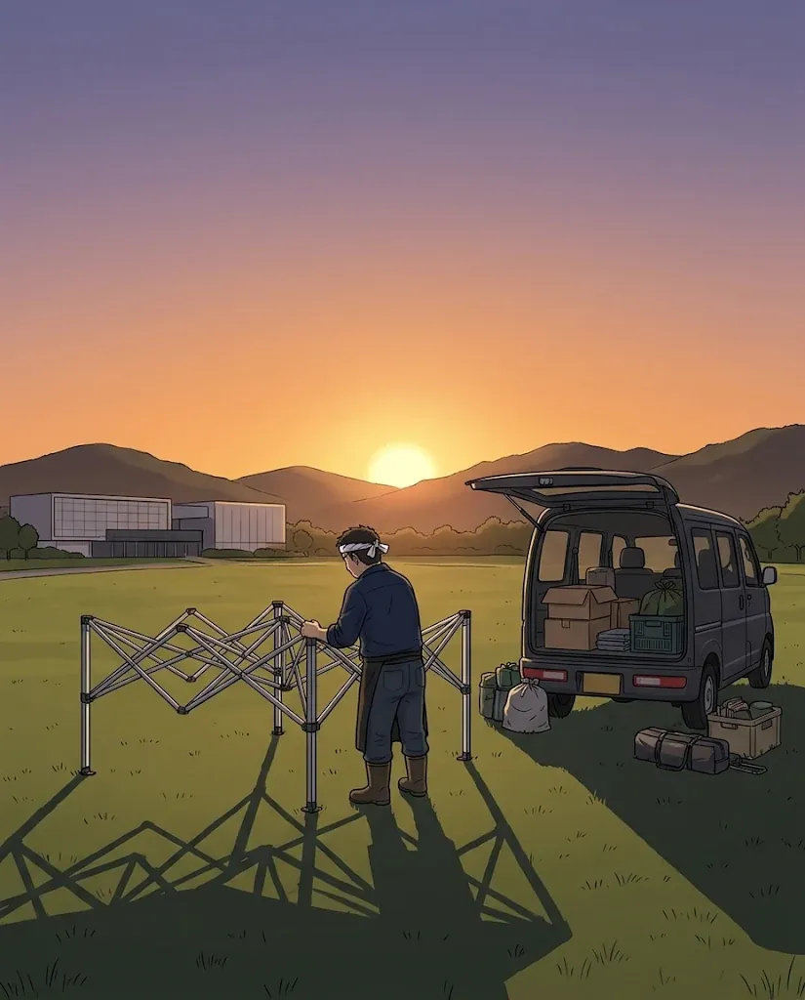
11月2日、3日の時点でイベントできません！の方が仕込みも抑えられたし、被害が少なかったと思うのですが。L1739
じゃあ、結局どうなの？ 記録から言えることを、先にまとめます。
備品がそろわなかった直接の原因は、主催が期限（11月2日）までにレンタル業者へ前払い293万円を払えなかったこと。予約が消えたことを、主催の3人（松林氏・小澤氏・さよと氏）も設営会社AXISも11月4日には知っていたのに、出店者には前日の夜まで知らされなかった。
「詐欺」「持ち逃げ」の証拠は、いまのところない。お金の使い道は、まだ開示されていない。
出店料・協賛金・チケット売上が、何に使われたか。使い道に不正が見つかれば、「詐欺の証拠はない」という結論が覆ります。収支は、まだ開示されていません。
ここから下は、そのもとになった記録の整理です。
それぞれについて、記録から言えること
出店者と約束した立場。前払いが間に合わず予約が白紙になっても、出店者に知らせないまま開催を続けた。契約書は開催3日前。前売り枚数を開示していない。予約が白紙になった後は、業者に直接お金を払って備品を集めた（少なくとも130万6,100円）。松林氏は「任命責任は実行委員会にあります」と書いている。K8
入金の保証がないまま引き受け、自社の判断で人員を減らした。主催には「手配済」と報告しながら、発注書は出さなかった。前日の遅れを「車両トラブル」とだけ説明し、入金の問題を伏せていた（本人も認めている）。冷蔵冷凍車とシンクの説明が、自分の過去の発言と食い違う。
11月4日には不足の報告を受けるグループにいて、前日の朝にはSNSでテントを探していた。11月11日の時点で、シンクなどの説明に「今初めて聞きました」と答えている。
契約書の作成者。11月4日から「発注確認」グループにいて、テントの不足を知っていた。11月11日以降の窓口とされる。役割の説明はまだない。
準備も、お金も、情報共有も、同時に崩れた。記録から読み取れるのは、ここまでです。
誰が悪いかを決めるのは、
この漫画ではありません。
でも、何が記録に残っているかは、
誰でも確かめられます。
↑ まだわかっていないこと。資料をお持ちの方は、ご提供をお願いします。